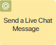
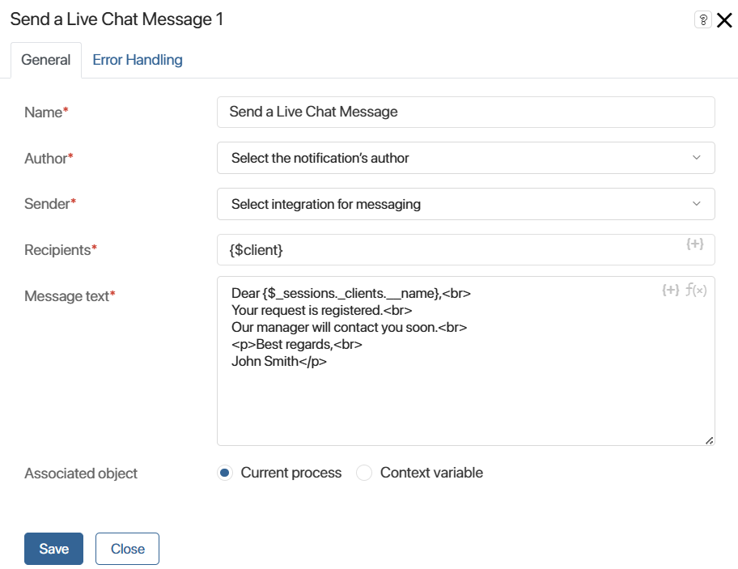
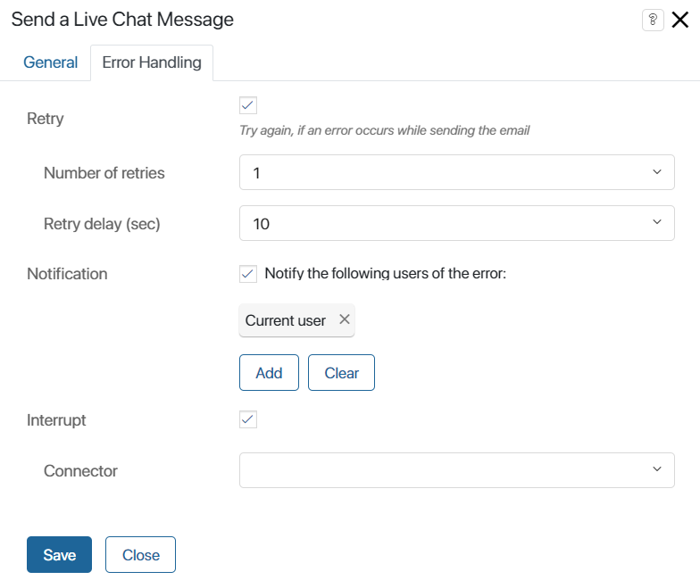

The graphical element allows you to send messages to clients from a Live Chat to a messenger during a business process without being bound to a certain session.
The element is placed wherever you need to notify the customer about the process’s progress. For example, you can set up sending notifications when an order is ready or send customers a contract agreed upon during the process for review. In addition, notifications can be used internally, for example, to inform employees about an important task.
If you need to customize the sending of messages bound to a certain session, use Send Live Chat Response.
The messages are sent automatically without the operator’s involvement and are displayed in the session with the client. Before setting up the activity, make sure that the live chat is connected to a messenger.
начало внимание
Only users included in the Administrators group can configure the activity.
конец внимание
Set up the activity
On the process page, in the toolbar to the right of the modeling canvas, open System elements. Drag the Send a Live Chat Message activity onto the diagram and place it wherever the process requires to send a notification to the customer.
Double-click the added activity to open the configuration window.
General tab

- Name*. Enter the text to be displayed in the activity on the process diagram.
- Author*. Select who will be specified as the author of the message: the System or the Initiator.
If the Initiator is selected, the author will be the user who started the business process. Please note, that the initiator must be a member of the Operators or Supervisors group.
- Sender*. Select a live chat from the list. The list will include all live chats for which integration with messengers or email is activated, as well as live chats for internal clients. If a live chat has several integrations activated, you can select only one of them.
- Recipients*. Click {+} in the right corner of the field and select the context variable of the Account type. A message will be sent to the account stored in the variable.
- Recipients (copies). The option is displayed if the Send channel field specifies a live chat with a linked email. Use the {+} icon to specify additional recipients of the email by selecting an Account type variable.
In this case, the full list of recipients will be displayed on the session page in the client information. The session operator automatically becomes the initiator of the process instance. If the process is started by the system, the session will be displayed in the general queue. - Message subject. The field is displayed if the live chat with the connected email is specified as the sending channel. Enter the subject of the email. To create a more informative subject, click the {+} icon and add process context variables. To use the DateTime() function in the subject line, use the f(x) icon.
- Message text*. Enter the text to be sent to the client. When doing so:
- Use the HTML markdown for text formatting. For example, put a single
<br>tag at the end of the sentence or phrase to start a new line. For paragraphs use the<p></p>tags and insert the text between them. - To add context variables of the current process to the text, click on the {+} icon. You can also add the DateTime() function by clicking on the f(x) icon.
- Associated object. Determine in which activity stream the notifications should be saved:
- Current process. Notifications are saved in the activity stream associated with the process instance.
- Context variable. This option allows you to select a variable that stores a specific object, such as an app. Alerts will be saved to the activity stream associated with that object. If this variable is not filled in when the process is executed, notifications will come to the process activity stream.
Error Handling tab
While sending a message, an error may occur, for example, the recipient may not be defined. On the Error Handling tab, you can define what actions should be performed in this case.

- Retry. Select this option if you want the message to be sent repeatedly:
- Number of retries. Specify how many times the attempt to send the message should be repeated.
- Retry delay (sec). Define the frequency of sending.
- Notification. Enable the option and then specify the users to whom notification about an error in the process will be sent. You can select the current user, a user group, an item of the organizational chart, or specify a context variable, for example, the process initiator. Please note that the current user is the person who has completed the task that is set before Live Chat Response on the process diagram.
- Interrupt. For the correct operation of the activity, it is necessary to enable this option and then specify in the Connector field which branch the process will follow in case of an error. The transition specified in these settings will be marked with the
 icon on the process diagram.
icon on the process diagram.
When you specify all the settings, click Save and then publish the process.
Found a typo? Select it and press Ctrl+Enter to send us feedback